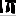
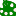

<!doctype html>
<html lang="en">
    <head>
        <meta charset="utf-8">
        <meta http-equiv="X-UA-Compatible" content="IE=edge">
        <meta name="viewport" content="initial-scale=1,user-scalable=no,maximum-scale=1,width=device-width">
        <meta name="mobile-web-app-capable" content="yes">
        <meta name="apple-mobile-web-app-capable" content="yes">
        <link rel="stylesheet" href="css/leaflet.css"><link rel="stylesheet" href="css/L.Control.Locate.min.css">
        <link rel="stylesheet" href="css/qgis2web.css"><link rel="stylesheet" href="css/fontawesome-all.min.css">
        <link rel="stylesheet" href="css/own_style.css">
        <style>
        html, body, #map {
            width: 100%;
            height: 100%;
            padding: 0;
            margin: 0;
        }
        </style>
        <title>Patrimoine de Moëlan sur mer raconté par l'association "Mémoires et Photos"</title>
    </head>
    <body>
        <div id="map">
        </div>
        <script src="js/qgis2web_expressions.js"></script>
        <script src="js/leaflet.js"></script><script src="js/L.Control.Locate.min.js"></script>
        <script src="js/leaflet.rotatedMarker.js"></script>
        <script src="js/leaflet.pattern.js"></script>
        <script src="js/leaflet-hash.js"></script>
        <script src="js/Autolinker.min.js"></script>
        <script src="js/rbush.min.js"></script>
        <script src="js/labelgun.min.js"></script>
        <script src="js/labels.js"></script>
        <script src="js/leaflet.wms.js"></script>
        <script src="data/Moulins_2.js"></script>
        <script src="data/Fourspain_3.js"></script>
        <script src="data/Art_4.js"></script>
        <script src="data/Mgalithes_5.js"></script>
        <script src="data/limitescommune_6.js"></script>
        <script>
        var map = L.map('map', {
            zoomControl:true, maxZoom:17, minZoom:13
        }).fitBounds([[47.75970937049711,-3.73406084843341],[47.8515562540458,-3.571307537598326]]);
        var hash = new L.Hash(map);
        map.attributionControl.setPrefix('<a href="https://github.com/tomchadwin/qgis2web" target="_blank">qgis2web</a> &middot; <a href="https://leafletjs.com" title="A JS library for interactive maps">Leaflet</a> &middot; <a href="https://qgis.org">QGIS</a>&middot; <a href="https://cms.geobretagne.fr/">GeoBretagne</a>&middot; <a href="https://www.openstreetmap.org/">OpenStreetMap</a>');
        var autolinker = new Autolinker({truncate: {length: 30, location: 'smart'}});
        L.control.locate({locateOptions: {maxZoom: 19}}).addTo(map);
        var bounds_group = new L.featureGroup([]);
        function setBounds() {
        }
        map.createPane('pane_OpenStreetMap_0');
        map.getPane('pane_OpenStreetMap_0').style.zIndex = 400;
        var layer_OpenStreetMap_0 = L.tileLayer('https://tile.openstreetmap.org/{z}/{x}/{y}.png', {
            pane: 'pane_OpenStreetMap_0',
            opacity: 1.0,
            attribution: '',
            minZoom: 13,
            maxZoom: 17,
            minNativeZoom: 0,
            maxNativeZoom: 19
        });
        layer_OpenStreetMap_0;
        map.addLayer(layer_OpenStreetMap_0);
        map.createPane('pane_OrthophotographieduFinistre2018_1');
        map.getPane('pane_OrthophotographieduFinistre2018_1').style.zIndex = 401;
        var layer_OrthophotographieduFinistre2018_1 = L.WMS.layer("https://geobretagne.fr/geoserver/photo/wms", "ortho-29-2018", {
            pane: 'pane_OrthophotographieduFinistre2018_1',
            format: 'image/png',
            uppercase: true,
            transparent: true,
            continuousWorld : true,
            tiled: true,
            info_format: 'text/html',
            opacity: 1,
            identify: false,
            attribution: '',
        });
        function pop_Moulins_2(feature, layer) {
            var popupContent = '<table>\
                    <tr>\
                        <td colspan="2">' + (feature.properties['NOM'] !== null ? autolinker.link(feature.properties['NOM'].toLocaleString()) : '') + '</td>\
                    </tr>\
                    <tr>\
                        <th scope="row">Type:</th>\
                        <td>' + (feature.properties['TYPE'] !== null ? autolinker.link(feature.properties['TYPE'].toLocaleString()) : '') + '</td>\
                    </tr>\
                    <tr>\
                        <th scope="row">Etat:</th>\
                        <td>' + (feature.properties['ETAT'] !== null ? autolinker.link(feature.properties['ETAT'].toLocaleString()) : '') + '</td>\
                    </tr>\
                    <tr>\
                        <td colspan="2">' + (feature.properties['LIEN'] !== null ? autolinker.link(feature.properties['LIEN'].toLocaleString()) : '') + '</td>\
                    </tr>\
                    <tr>\
                        <td colspan="2">' + (feature.properties['PHOTO'] !== null ? '' : '') + '</td>\
                    </tr>\
                </table>';
            layer.bindPopup(popupContent, {maxHeight: 400});
        }

        function style_Moulins_2_0(feature) {
            switch(String(feature.properties['TYPE'])) {
                case 'eau':
                    return {
                pane: 'pane_Moulins_2',
        rotationAngle: 0.0,
        rotationOrigin: 'center center',
        icon: L.icon({
            iconUrl: 'markers/watermill-violet.svg',
            iconSize: [26.599999999999998, 26.599999999999998]
        }),
                interactive: true,
            }
                    break;
                case 'vent':
                    return {
                pane: 'pane_Moulins_2',
        rotationAngle: 0.0,
        rotationOrigin: 'center center',
        icon: L.icon({
            iconUrl: 'markers/tourist_windmill-violet.svg',
            iconSize: [26.599999999999998, 26.599999999999998]
        }),
                interactive: true,
            }
                    break;
            }
        }
        map.createPane('pane_Moulins_2');
        map.getPane('pane_Moulins_2').style.zIndex = 402;
        map.getPane('pane_Moulins_2').style['mix-blend-mode'] = 'normal';
        var layer_Moulins_2 = new L.geoJson(json_Moulins_2, {
            attribution: '',
            interactive: true,
            dataVar: 'json_Moulins_2',
            layerName: 'layer_Moulins_2',
            pane: 'pane_Moulins_2',
            onEachFeature: pop_Moulins_2,
            pointToLayer: function (feature, latlng) {
                var context = {
                    feature: feature,
                    variables: {}
                };
                return L.marker(latlng, style_Moulins_2_0(feature));
            },
        });
        bounds_group.addLayer(layer_Moulins_2);
        map.addLayer(layer_Moulins_2);
        function pop_Fourspain_3(feature, layer) {
            var popupContent = '<table>\
                    <tr>\
                        <td colspan="2">' + (feature.properties['Nom'] !== null ? autolinker.link(feature.properties['Nom'].toLocaleString()) : '') + '</td>\
                    </tr>\
                    <tr>\
                        <td colspan="2">' + (feature.properties['place'] !== null ? autolinker.link(feature.properties['place'].toLocaleString()) : '') + '</td>\
                    </tr>\
                    <tr>\
                        <td colspan="2">' + (feature.properties['lien'] !== null ? autolinker.link(feature.properties['lien'].toLocaleString()) : '') + '</td>\
                    </tr>\
                    <tr>\
                        <td colspan="2">' + (feature.properties['photo'] !== null ? '' : '') + '</td>\
                    </tr>\
                </table>';
            layer.bindPopup(popupContent, {maxHeight: 400});
        }

        function style_Fourspain_3_0() {
            return {
                pane: 'pane_Fourspain_3',
        rotationAngle: 0.0,
        rotationOrigin: 'center center',
        icon: L.icon({
            iconUrl: 'markers/four-a-pain.svg',
            iconSize: [26.599999999999998, 26.599999999999998]
        }),
                interactive: true,
            }
        }
        map.createPane('pane_Fourspain_3');
        map.getPane('pane_Fourspain_3').style.zIndex = 403;
        map.getPane('pane_Fourspain_3').style['mix-blend-mode'] = 'normal';
        var layer_Fourspain_3 = new L.geoJson(json_Fourspain_3, {
            attribution: '',
            interactive: true,
            dataVar: 'json_Fourspain_3',
            layerName: 'layer_Fourspain_3',
            pane: 'pane_Fourspain_3',
            onEachFeature: pop_Fourspain_3,
            pointToLayer: function (feature, latlng) {
                var context = {
                    feature: feature,
                    variables: {}
                };
                return L.marker(latlng, style_Fourspain_3_0(feature));
            },
        });
        bounds_group.addLayer(layer_Fourspain_3);
        map.addLayer(layer_Fourspain_3);
        function pop_Art_4(feature, layer) {
            var popupContent = '<table>\
                    <tr>\
                        <td colspan="2">' + (feature.properties['nom'] !== null ? autolinker.link(feature.properties['nom'].toLocaleString()) : '') + '</td>\
                    </tr>\
                    <tr>\
                        <td colspan="2">' + (feature.properties['type'] !== null ? autolinker.link(feature.properties['type'].toLocaleString()) : '') + '</td>\
                    </tr>\
                    <tr>\
                        <td colspan="2">' + (feature.properties['lien'] !== null ? autolinker.link(feature.properties['lien'].toLocaleString()) : '') + '</td>\
                    </tr>\
                    <tr>\
                        <td colspan="2">' + (feature.properties['photo'] !== null ? '' : '') + '</td>\
                    </tr>\
                </table>';
            layer.bindPopup(popupContent, {maxHeight: 400});
        }

        function style_Art_4_0() {
            return {
                pane: 'pane_Art_4',
        rotationAngle: 0.0,
        rotationOrigin: 'center center',
        icon: L.icon({
            iconUrl: 'markers/tourist_art_gallery3.svg',
            iconSize: [26.599999999999998, 26.599999999999998]
        }),
                interactive: true,
            }
        }
        map.createPane('pane_Art_4');
        map.getPane('pane_Art_4').style.zIndex = 404;
        map.getPane('pane_Art_4').style['mix-blend-mode'] = 'normal';
        var layer_Art_4 = new L.geoJson(json_Art_4, {
            attribution: '',
            interactive: true,
            dataVar: 'json_Art_4',
            layerName: 'layer_Art_4',
            pane: 'pane_Art_4',
            onEachFeature: pop_Art_4,
            pointToLayer: function (feature, latlng) {
                var context = {
                    feature: feature,
                    variables: {}
                };
                return L.marker(latlng, style_Art_4_0(feature));
            },
        });
        bounds_group.addLayer(layer_Art_4);
        map.addLayer(layer_Art_4);
        function pop_Mgalithes_5(feature, layer) {
            var popupContent = '<table>\
                    <tr>\
                        <td colspan="2"><strong>Nom</strong><br />' + (feature.properties['Nom'] !== null ? autolinker.link(feature.properties['Nom'].toLocaleString()) : '') + '</td>\
                    </tr>\
                    <tr>\
                        <th scope="row">Type</th>\
                        <td>' + (feature.properties['Type'] !== null ? autolinker.link(feature.properties['Type'].toLocaleString()) : '') + '</td>\
                    </tr>\
                    <tr>\
                        <td colspan="2">' + (feature.properties['lien'] !== null ? autolinker.link(feature.properties['lien'].toLocaleString()) : '') + '</td>\
                    </tr>\
                    <tr>\
                        <td colspan="2">' + (feature.properties['Photo'] !== null ? '' : '') + '</td>\
                    </tr>\
                </table>';
            layer.bindPopup(popupContent, {maxHeight: 400});
        }

        function style_Mgalithes_5_0() {
            return {
                pane: 'pane_Mgalithes_5',
        rotationAngle: 0.0,
        rotationOrigin: 'center center',
        icon: L.icon({
            iconUrl: 'markers/dolmen-transparent.svg',
            iconSize: [26.599999999999998, 26.599999999999998]
        }),
                interactive: true,
            }
        }
        map.createPane('pane_Mgalithes_5');
        map.getPane('pane_Mgalithes_5').style.zIndex = 405;
        map.getPane('pane_Mgalithes_5').style['mix-blend-mode'] = 'normal';
        var layer_Mgalithes_5 = new L.geoJson(json_Mgalithes_5, {
            attribution: '',
            interactive: true,
            dataVar: 'json_Mgalithes_5',
            layerName: 'layer_Mgalithes_5',
            pane: 'pane_Mgalithes_5',
            onEachFeature: pop_Mgalithes_5,
            pointToLayer: function (feature, latlng) {
                var context = {
                    feature: feature,
                    variables: {}
                };
                return L.marker(latlng, style_Mgalithes_5_0(feature));
            },
        });
        bounds_group.addLayer(layer_Mgalithes_5);
        map.addLayer(layer_Mgalithes_5);
        function pop_limitescommune_6(feature, layer) {
            var popupContent = '<table>\
                    <tr>\
                        <td colspan="2">' + (feature.properties['OBJECT_RID'] !== null ? autolinker.link(feature.properties['OBJECT_RID'].toLocaleString()) : '') + '</td>\
                    </tr>\
                    <tr>\
                        <td colspan="2">' + (feature.properties['IDU'] !== null ? autolinker.link(feature.properties['IDU'].toLocaleString()) : '') + '</td>\
                    </tr>\
                    <tr>\
                        <td colspan="2">' + (feature.properties['TEX2'] !== null ? autolinker.link(feature.properties['TEX2'].toLocaleString()) : '') + '</td>\
                    </tr>\
                    <tr>\
                        <td colspan="2">' + (feature.properties['CREAT_DATE'] !== null ? autolinker.link(feature.properties['CREAT_DATE'].toLocaleString()) : '') + '</td>\
                    </tr>\
                    <tr>\
                        <td colspan="2">' + (feature.properties['UPDATE_DAT'] !== null ? autolinker.link(feature.properties['UPDATE_DAT'].toLocaleString()) : '') + '</td>\
                    </tr>\
                </table>';
            layer.bindPopup(popupContent, {maxHeight: 400});
        }

        function style_limitescommune_6_0() {
            return {
                pane: 'pane_limitescommune_6',
                opacity: 1,
                color: 'rgba(53,121,177,1.0)',
                dashArray: '',
                lineCap: 'square',
                lineJoin: 'bevel',
                weight: 4.0,
                fillOpacity: 0,
                interactive: false,
            }
        }
        map.createPane('pane_limitescommune_6');
        map.getPane('pane_limitescommune_6').style.zIndex = 406;
        map.getPane('pane_limitescommune_6').style['mix-blend-mode'] = 'normal';
        var layer_limitescommune_6 = new L.geoJson(json_limitescommune_6, {
            attribution: '',
            interactive: false,
            dataVar: 'json_limitescommune_6',
            layerName: 'layer_limitescommune_6',
            pane: 'pane_limitescommune_6',
            onEachFeature: pop_limitescommune_6,
            style: style_limitescommune_6_0,
        });
        bounds_group.addLayer(layer_limitescommune_6);
        map.addLayer(layer_limitescommune_6);
            var title = new L.Control();
            title.onAdd = function (map) {
                this._div = L.DomUtil.create('div', 'info');
                this.update();
                return this._div;
            };
            title.update = function () {
                this._div.innerHTML = '<a href="http://memoiresetphotos.free.fr"></a><p>Le patrimoine de Moëlan-sur-mer</p><p>par l\'association Mémoires et Photos</p>';
            };
            title.addTo(map);
            var abstract = new L.Control({'position':'bottomleft'});
            abstract.onAdd = function (map) {
                this._div = L.DomUtil.create('div',
                'leaflet-control abstract');
                this._div.id = 'abstract'

                    abstract.show();
                    return this._div;
                };
                abstract.show = function () {
                    this._div.classList.remove("abstract");
                    this._div.classList.add("abstractUncollapsed");
                    this._div.innerHTML = '- Zoom avec + et - ou avec la roulette de la souris<br />- Accès aux liens en cliquant lorsque le curseur forme une main ';
            };
            abstract.addTo(map);
        var baseMaps = {
            "<span style='color: gray'>OpenStreetMap</span>": layer_OpenStreetMap_0,
             "Orthophotographie du Finistère 2018": layer_OrthophotographieduFinistre2018_1
        };
        L.control.layers(baseMaps,{' Mégalithes': layer_Mgalithes_5,' Art': layer_Art_4,' Fours à pain': layer_Fourspain_3,'Moulins<br /><table><tr><td style="text-align: center;"></td><td>eau</td></tr><tr><td style="text-align: center;"></td><td>vent</td></tr></table>': layer_Moulins_2,},{collapsed:false}).addTo(map);
        setBounds();
        </script>
    </body>
</html>
